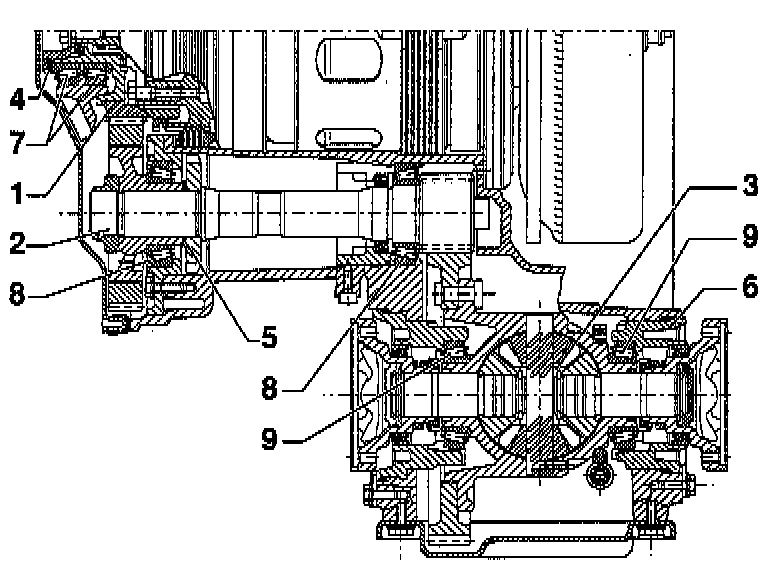
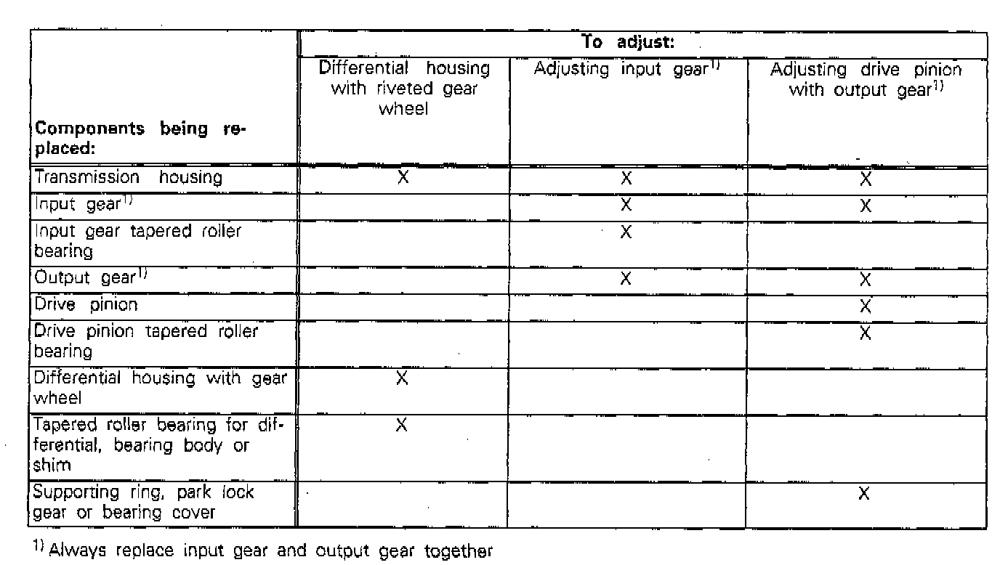

Adjustment Overview

COMPONENT LOCATION AND INFORMATION
1 - Input gear
- Adjusting, refer to Input Gear
2 - Drive pinion
- Adjusting, refer to Drive Pinion
3 - Differential
- Adjusting, refer to Differential
4 - Shim for input gear
- Determine thickness from table, refer to Input Gear
- Determine part number from parts catalog
5 - Shim for drive pinion
- Determine thickness from table, refer to Drive Pinion
- Determine part number from parts catalog
6 - Shim for differential
7 - Tapered roller bearings for input gear
- Always replace together
- Measure friction torque via pinion shaft.
Friction torque of new tapered roller bearings must be 180 - 220 Nm (16 - 20 inch lb) greater than friction torque of pinion shaft
8 - Tapered roller bearings for drive pinion
- Always replace together
- Re-determine shim when replacing tapered roller bearings
9 - Tapered roller bearings for differential
- Always replace together
- Measure friction torque via drive pinion.
Friction torque of new tapered roller bearings must be 60 - 80 Nm (5 - 7 inch lb) greater than friction torque of drive pinion
ADJUSTMENTS TO BE COMPLETED AFTER REPLACING INDIVIDUAL COMPONENTS
- When working on transmission the following components only require adjustment if individual components have been replaced that directly affect the final cave adjustment. To eliminate unnecessary adjustments observe following table:
